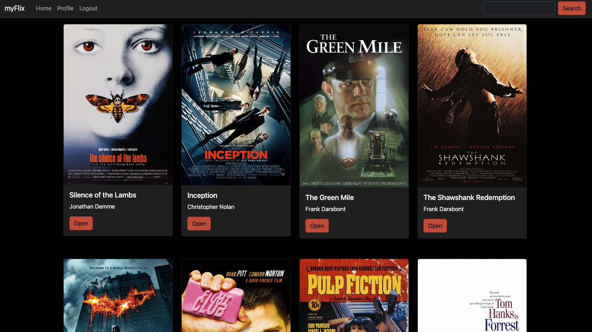
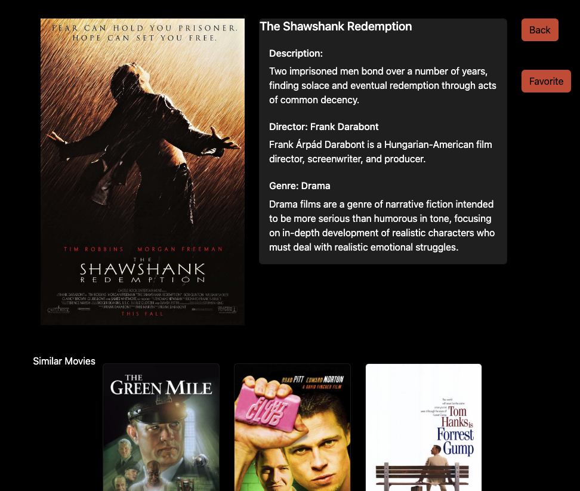

MyFlix App, React
Github link App linkThe Goal:
To build a full front to back application that allows users to create a profile, view a database of movies, and save some as favorites. Once connected to my backend API, this will be a complete MERN stack application.
The Purpose:
Career Foundry, Full-Stack Immersion, Achievement 3
To connect to the movies API I had already built in a previous achievement and build a front end architecture using React. This was my first opportunity exploring React and learning the basics of how it functions.
The Tools:
- JavaScript
- React
- Parcel
- Bootstrap
- propTypes
The Process:
This was my first time working through using React as a framework so I was learning the fundamentals at the beginning. Once I got in the swing of things and started to understand what "States" and "props" really meant and how to use them, I really started to enjoy how React works. I love structure so to have a specified structure to work within felt great.
My first challenge was building a search function allowing users to search for movies within the database and then go to that movie's specified details page. It took me a while to figure out how to access the database in a search and then if successful send the user to the details page. This was the moment when the idea of passing props through child components clicked. I knew I didn’t want to fully search my database for a match and since I had already retrieved all my movie data in my MainView component, I passed movies to the Search component and was then able to search for a match in there. It feels silly and obvious writing it now but I can see how this was the moment when I fell in love with React.

The Outcome:
I am proud of my first full back to front application. I could feel myself not just learning the skills to build with React but also starting to actually understand programming and how that can translate into any framework. I would love to revisit this application and improve upon the “favorite-ing” structure and add a visible element for the user to see if the movie is already favorited or not.